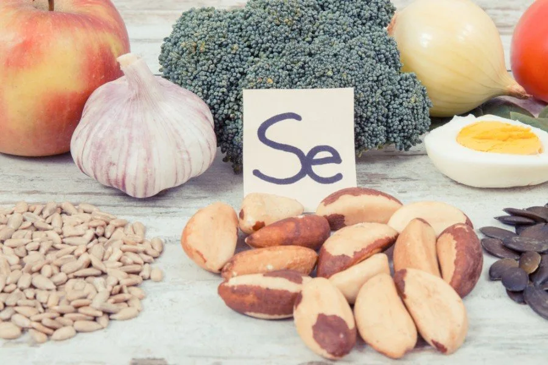

硒的完全指南

硒（Selenium，簡寫為Se）是一種極其重要的礦物質，主要以硒胺酸（selenocysteine）的形式存在於人體內，並融入至少25種蛋白質中，這些蛋白質被稱為硒蛋白（selenoproteins）。這些硒蛋白包括五種穀胱甘肽過氧化酶（GPx1-4 和 GPx6）、三種硫氧還原酶、三種碘甲狀腺氨酸去碘酶和一種蛋氨酸亞砜還原酶B1。硒主要通過飲食攝取，在人體內的儲存部位主要是骨骼和肌肉。
硒可以說是人體的「超級元素」，其主要功能包括促進甲狀腺健康、抗癌、抗氧化（生成穀胱甘肽）、改善自體免疫疾病、預防砷中毒和重金屬中毒、預防糖尿病、維持皮膚彈性、預防動脈硬化以及改善精子健康。此外，硒對肝臟和膽囊的健康也有幫助。
在臨床上，硒主要被我拿來處理甲狀腺低下的患者，因為硒對於將T4甲狀腺轉換成具有活性的T3甲狀腺起到關鍵的作用。如果體內的硒不夠，很可能會導致甲狀腺功能低下，T4堆積，無法轉緩成T3。這個狀況只利用常見的TSH和T4檢驗是看不出來的，必須T4和T3同時檢驗。
硒與男性生殖功能密切相關，它是形成精子的必須成分，能促進性賀爾蒙分泌並增加受孕機率。對女性來說，硒有助於緩解更年期症狀的不適。由於硒會隨著精液排出體外，因此男性更需要補充。此外，硒依賴性碘甲狀腺氨酸去碘酶在調節甲狀腺激素活性以及生長發育中發揮著重要作用，因此對甲狀腺有問題的患者，我通常建議適量補充硒，特別是台灣尚未普及相關檢測。
硒在癌症防治方面也具有顯著作用。超過100項研究涉及20種不同的動物模型，這些研究包括自發性癌症、病毒引起的癌症以及化學誘導的癌症。硒對於DNA的產生和修復也有關鍵性的作用。超過三分之二的研究表明，與硒缺乏的飲食相比，適量補充硒可顯著減少腫瘤的發生率。然而，在硒攝取充足的人群中，補充硒並不能顯著降低癌症風險。
雖然硒對人體至關重要，但單獨的硒缺乏通常不會導致明顯的臨床疾病。然而，硒缺乏者可能對額外的生理壓力更為敏感。長期食用代餐、進行減肥手術或患有嚴重胃腸道疾病（如克隆氏症）的患者可能更容易缺乏硒，增加相關風險。
硒在自身免疫性甲狀腺疾病中可能扮演重要角色，特別是在橋本甲狀腺炎（Hashimoto thyroiditis）中。硒缺乏和基因多態性可能加重病情。研究顯示，硒補充劑可以降低自體抗體水平，但尚未證明其能改善臨床症狀或減少左旋甲狀腺素的用量。在格雷夫斯病（Grave’s disease）中，硒補充劑可能有助於改善患者的生活質量。
硒補充劑有多種形式，可分為有機型和無機型。常見的無機形式包括亞硒酸鈉（Sodium selenite）和硒酸鈉（Sodium selenate），其中亞硒酸鈉的吸收率約為50%，但保留率較高；硒酸鈉的吸收率接近100%，但大量經尿液排出。有機形式如硒代蛋氨酸（Selenomethionine）的吸收率約為90%，但只有約34%能轉化為游離硒代蛋氨酸。有機硒應作為長期補充選項，無機硒則為急性期補充的選擇。
我認為每天服用 75 微克至 150 微克的硒劑量最有意義，孕婦以及哺乳中的婦女尤其需要。含有硒的食物包括巴西堅果、海鮮、牛肉、雞蛋、糙米和葵花籽等。食用巴西堅果是補充硒的聰明選擇，一顆堅果可能含有68至90微克的硒，因此每天吃2至5顆即可達到補充效果，不可過量。「煮」或「炸」會導致食物中的硒大量流失，「蒸」或「烤」是比較能保留營養的方式。從補充品補充硒的話我會建議有機的型式，像是「硒代蛋氨酸」和「硒酵母」。硒是我會建議癌症病人補充的重要元素之一。
儘管硒有許多好處，但過量攝取硒也可能導致慢性硒中毒（selenosis）。最常見的中毒症狀包括頭髮和指甲的脆弱及脫落，其他症狀可能包括胃腸不適、皮膚疹、蒜味口氣、疲勞、易怒及神經系統紊亂。隨著血液中硒含量的增加，糖尿病和胰島素阻抗的風險也會增加。 為預防慢性硒中毒，建議成人硒的可耐受最高攝入量（UL）為每天400微克。
 空腹小雞跟思思醫師一起斷食，順便養一隻小雞來養小雞 →
空腹小雞跟思思醫師一起斷食，順便養一隻小雞來養小雞 →
好朋友週信
一週一封：《健康駭客週報》這集的研究重點，加上家醫專欄這週的新文章。免費，隨時可以退訂。
延伸閱讀

減少碳水錯了嗎？碳水的這些好處
作者說明對已改善胰島素阻抗的人，長期極低碳水可能影響甲狀腺素轉換並加重壓力荷爾蒙負擔，建議用循環式碳水飲食運用碳水。

抗氧化的紅色奇蹟，蝦紅素
天然蝦紅素從雨生紅球藻來源、穿透血腦屏障、抗氧化力遠超維生素C和E，對心血管、神經退化和運動表現都有保護。

十字花科如何解毒與抗癌，DIM
十字花科蔬菜的DIM能平衡雌激素代謝、抑制腫瘤形成，每週吃三四次十字花科蔬菜並搭配生食來源以保留芥子酶活性最為理想。